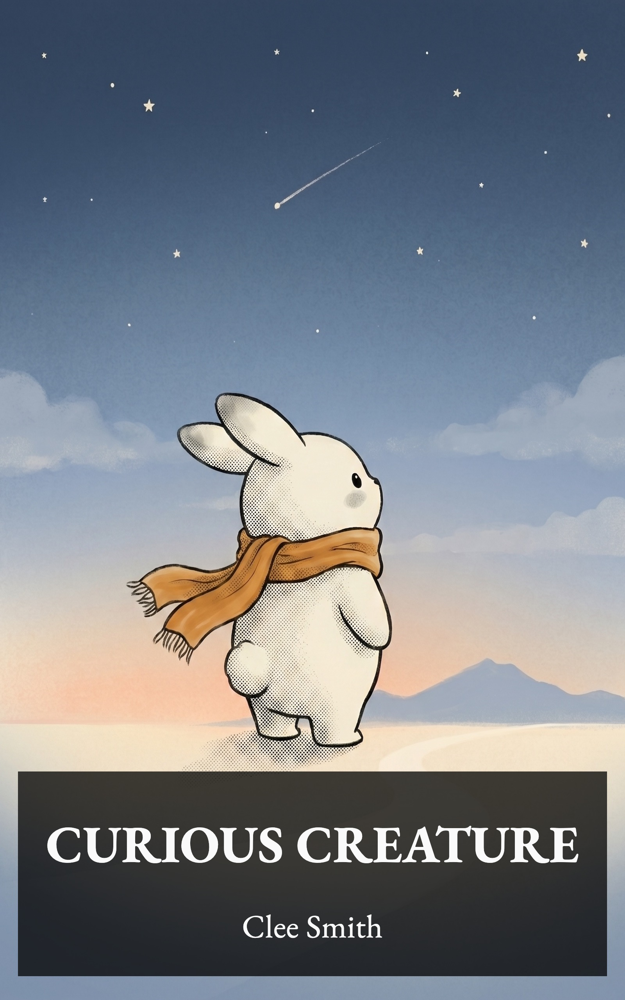
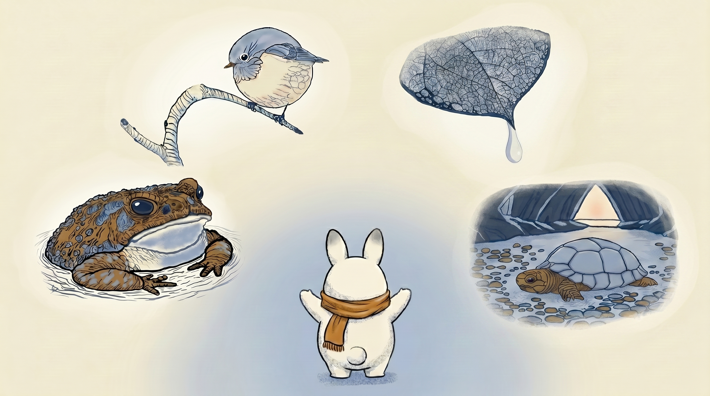
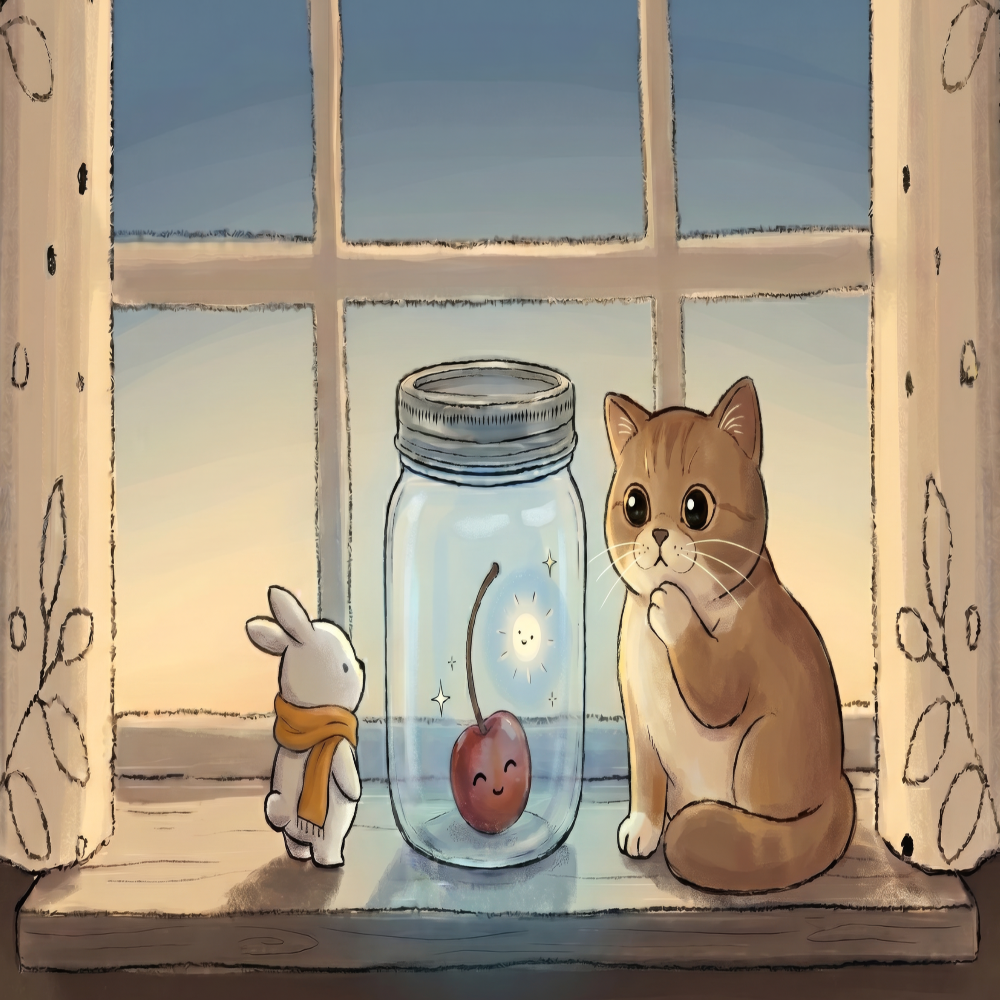
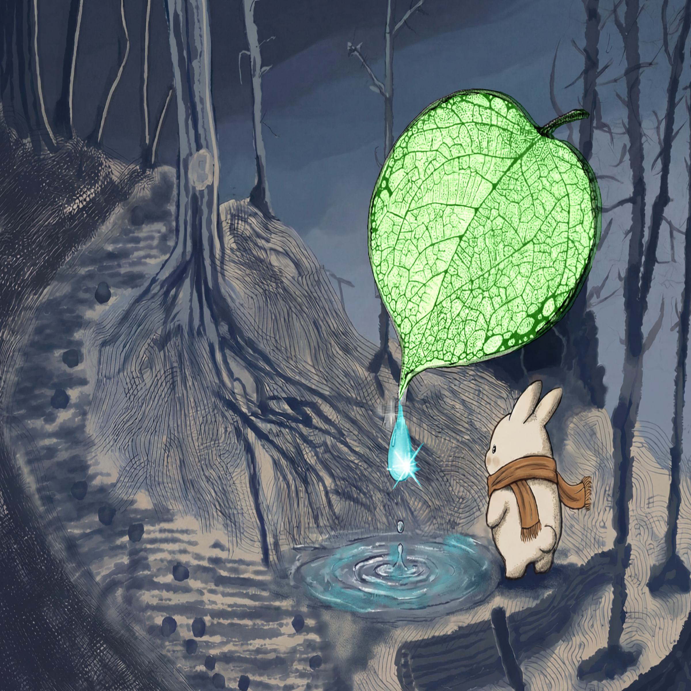
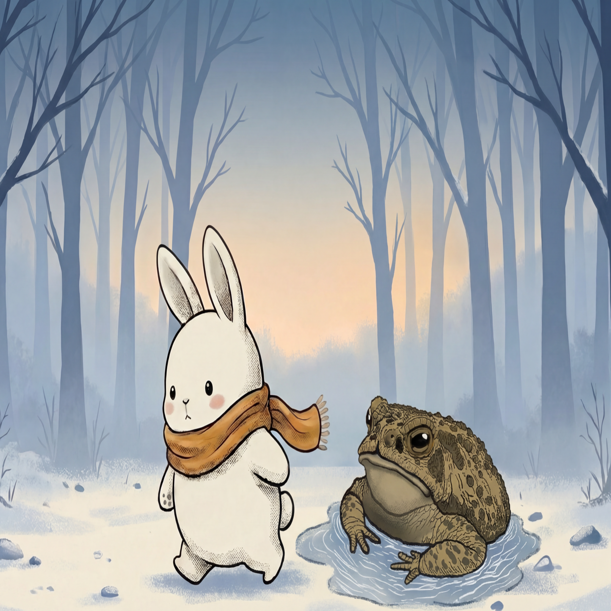
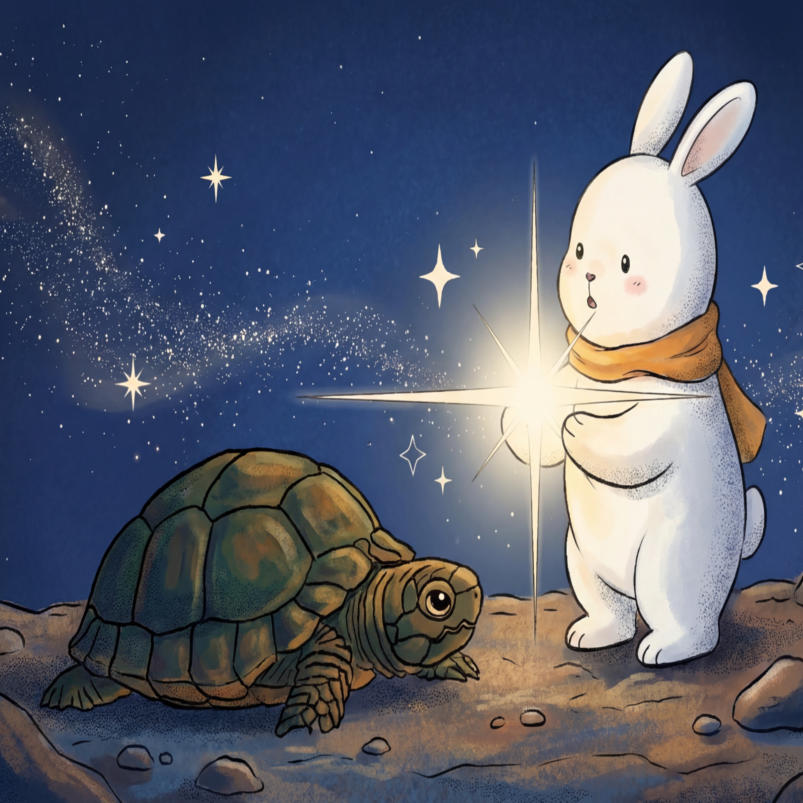
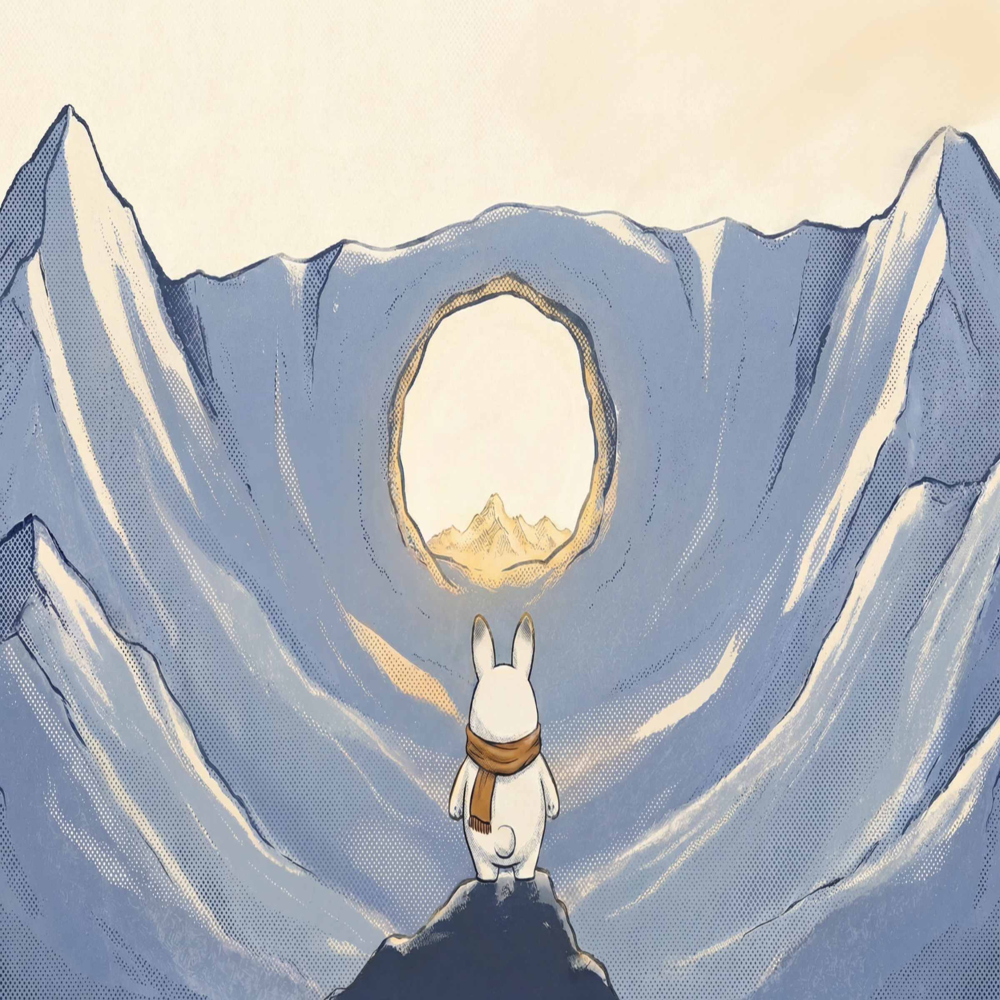

CURIOUS CREATURE
Slip the Trap
Copyright © 2026 by Clee Smith
All rights reserved.
No part of this book may be reproduced in any form or by any electronic or mechanical means, including information storage and retrieval systems, without written permission from the author, except for the use of brief quotations in a book review.

Wonders: bird, drip, toad, turtle



